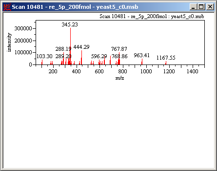

The Stacked display mode displays multiple spectra or chromatograms vertically in one window.
Select [View] in the menu bar and then select [Display Mode] > [Stacked] from the drop down menu.
The Stacked display mode can also be selected by clicking the icon in the toolbar.
In the Sample Tree, double-click the spectrum/chromatogram to be displayed.
In the Sample Tree, double-click the spectrum/chromatogram to be added to the window.
The selected spectrum/chromatogram is added at the bottom.
Repeat Step 3 to add more spectra/chromatograms.